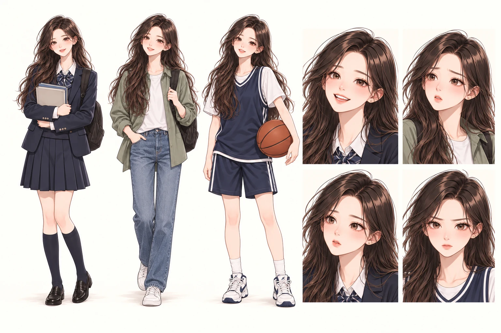
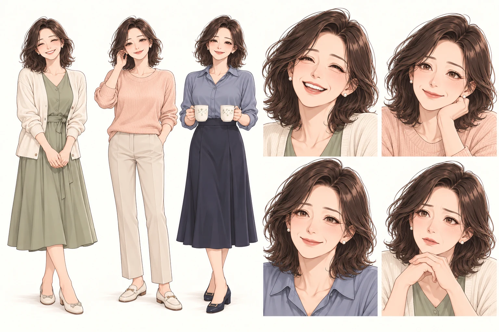
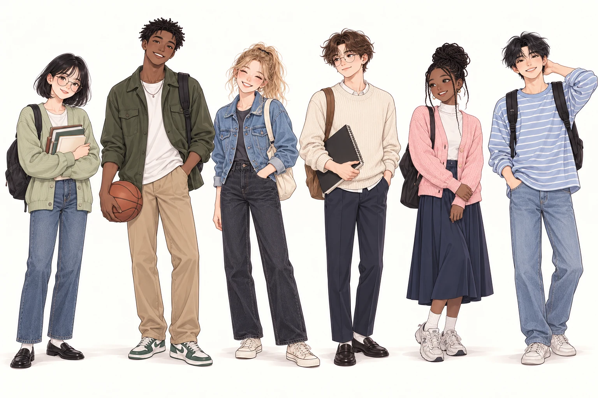

꿈이 시작된 얼굴들
김미아
꿈 많은 고등학생. 책과 사람의 이야기를 좋아하는 소녀.


김정민
외교관인 아버지. 가족과 함께 미국 전근을 준비한다.

이지현
가정주부인 어머니. 밝은 긍정과 경청으로 미아를 이끈다.


학교 친구들
한국과 미국 학교생활의 주변인 후보. 이름과 관계는 차례로 정한다.


꿈 많은 고등학생. 책과 사람의 이야기를 좋아하는 소녀.

외교관인 아버지. 가족과 함께 미국 전근을 준비한다.
가정주부인 어머니. 밝은 긍정과 경청으로 미아를 이끈다.

한국과 미국 학교생활의 주변인 후보. 이름과 관계는 차례로 정한다.
